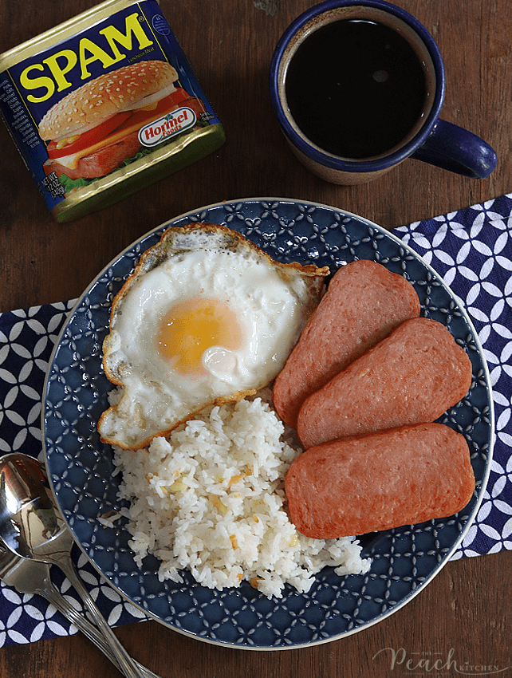

Spamsilog

Classic filipino silog with spam. The term silog refers to sinangag and itlog, otherwise known as garlic fried rice and egg.
Ingredients
- 1 can of Spam
- 3-5 eggs
- Cooking oil
Garlic Rice
- 6-8 Cloves of Garlic
- 2 tbsp oil
- 5 cups cooked rice
- 2 tsp fish sauce
Cooking Instructions
Spam and Eggs
- Heat oil in preferred pan and cook eggs sunny side up.
- Fry Spam slices to preferred finish in the same pan.
Garlic Rice
- Heat oil in a pan and saute garlic until fragrant.
- Add rice and mix well. Stir for about 2 minutes or until heated through.
- Drizzle with fish sauce and continue mixing for 30 seconds.
- Turn off heat and transfer to serving plate or bowl.
- Serve Garlic Rice with Spam and sunny side up egg. Enjoy!